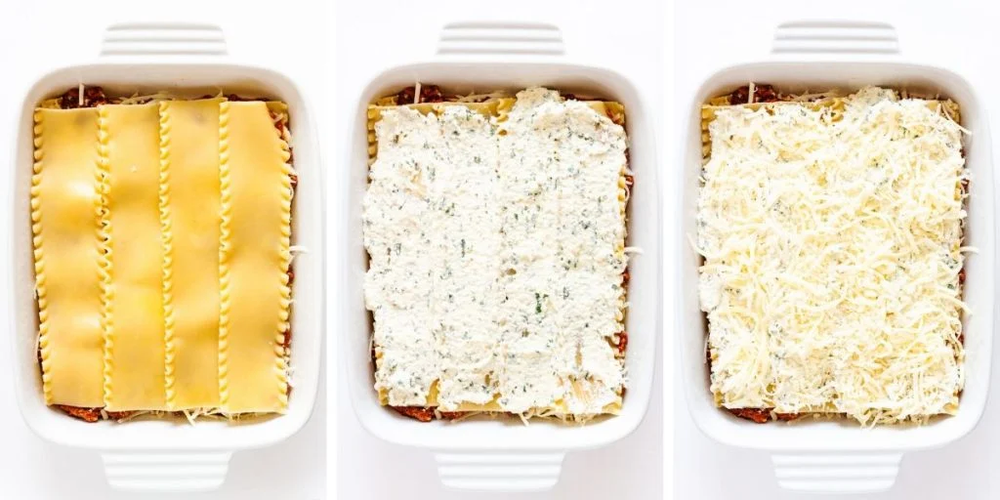

Recipe for Lasagna
Lasagna with Bechamel and Ricotta
This is the ultimate lasagna recipe! Layers of noodles, hearty Bolognese sauce, creamy Bechamel, ricotta and a mixture of cheeses all baked until gooey and delicious. This is crowd-pleasing comfort food at its finest!
This homemade lasagna recipe is incredibly delicious, comforting and quite simply AH-MAZING! Not only is it one of my husband’s absolute favorite dishes but my family also loves it so much that they request it for Christmas dinner each year.
What you will need
- Bolognese sauce
- Bechamel Sauce
- Lasagna Noodles
- Cheese
- Chopped Parsley or Basil
You will also need a:
- Lasagna Pan or Dish
Steps
- Make or Reheat Bolognese Sauce: To significantly cut down on prep time (and to save your sanity), I recommend making the Bolognese Sauce ahead of time. Simply reheat before assembling your lasagna so that it spreads more easily
- Prepare Bechamel Sauce: Melt the butter in a small pot over medium heat and whisk in the flour for 1 minute to create a roux. Slowly whisk in the milk and simmer until thickened. Season with a pinch of nutmeg, salt and pepper.
- Prepare Ricotta Mixture: Mix the ingredients together in a bowl and place in the fridge until ready to use.
- Shred Cheeses: Freshly shred your cheeses for the best texture. Using a food processor with a shredding attachment makes this quick and easy. Toss all the cheeses together in a bowl to distribute the different types evenly.
- Cook Noodles: Do not overcook the noodles since they will also be baked. Follow package directions but take 1-2 minutes off the recommended cook time so that the noodles are very al dente. Drain, rinse with cold water and lay out flat on dish towels to prevent them from sticking together.
Time to assemble the lasagna
Now that all the components are prepped, it is time to start layering the lasagna. This recipe uses 4 layers of pasta. If your dish isn’t deep enough, just use 3 layers (no worries!). Let’s go through the different layers!
Coat the bottom
Spread 1 cup of Bolognaise Sauce on the bottom of the dish
Layer 1
Place 4 noodles on top, slightly overlapping. Spread over half the Bechamel Sauce, 1/3 of the remaining Bolognese Sauce and 1 cup shredded cheese mixture.
Layer 2
Place 4 more noodles on. Spread over the ricotta mixture and 1 cup shredded cheese mixture

Layer 3
Place 4 more noodles on. Spread over the other half of the Bechamel Sauce, another layer of Bolognese Sauce and 1 cup shredded cheese mixture.
Layer 4
Place 4 more noodles on. Spread over the remaining Bolognese Sauce followed by a generous scattering of cheese (remaining 1-2 cups).
Bake and enjoy!
All that’s left to do now is to bake the lasagna and dig in to all that delicious, comforting goodness.
- Cover With Foil: Cover lasagna with foil (see FAQ to find out how to prevent it from sticking). Place lasagna on a baking sheet to catch any sauce that bubbles over (this saves me every time!).
- Bake: Bake in a preheated oven (375F/190C) for 45 minutes. Then remove the foil and bake for an additional 15-20 min or until the cheese is golden (can also pop under the broiler for a bit at the end).
- Let Rest: Let it rest, uncovered, for 15-20 minutes before slicing into it. Garnish with finely chopped basil or parsley. Then slice yourself a generous serving and enjoy!
Back to Homepage